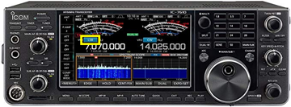
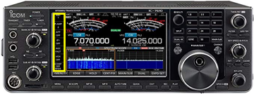

fldigi on the IC-7610
Fldigi suite
As of 2023-12-19, the installed version of fldigi is 4.1.26.
On the PC
- Open fldigi. (Icon is on desktop.)
Fldigi is configured to use the flrig program to interface between the radio and the computer. Flrig should open automatically a few seconds after fldigi opens. If flrig shows the current VFO frequency and so does fldigi, the two devices are talking to one another.
- Confirm Settings
It’s not essential to confirm the settings each time you start up, but doing so will make sure that you are able to operate without difficulty.
In flrig, open the Config menu and select Setup > Transceiver. This opens a separate window.
| Parameter | Value | Comments |
|---|---|---|
| Rig | IC-7610 | |
| Ser Port | COM3 | |
| Baud | 38400 | |
| (Stop bits) | 1 | |
| PTT via CAT | \(\checkmark\) | |
| CI-V adr | 0x98 |
You may now close the Configuration window by pressing the CLOSE button or close window (X) button.
- Check receive operations
- Turn to a known PSK31 frequency, for example, 14.070 MHz in the 20 m band.
- From the fldigi Op Mode menu, select PSK > BPSK-31
If all is well, you should see decodes in the left hand window and signals in the waterfall below.
- Configure your operational settings.
- From the Configure menu, select UI > Operator to open a window.
- Under the Operator tab set Station Callsign, Operator Callsign, Operator Name, Antenna, Station QTH, Station Locator and other items.
On the IC-7610
- Confirm rig is in USB Data 2 (USB-D2) mode.

To change the mode, press the mode indicator on the touch screen to open a window to toggle the mode (USB/LSB) to USB. Unless you are sure that your digital mode uses LSB, select USB. Press and hold the DATA button to switch between D1, D2, and D3 data mode connectors. D2 is configured for use via USB.
- Set your bandwidth to filter 1 (wide) by pressing the FILTER button located on the right side of the front panel.

You may adjust the filter settings by pressing and holding the filter button on the right side of the rig control panel. Press the arrow/return button on the display/touch screen to save and apply the filter settings.
- Set other settings
The following settings can be changed via buttons on the left side of the touch/display screen.

- Preamp (P.AMP) off
Press the P.AMP button to cycle through the settings (OFF, P.AMP 1, P.AMP 2)
- Attenuator (ATT) off
Press the ATT button to cycle through the attenuator settings (OFF, 6 dB, 12 dB, 18 dB)
- IP+ off
Press the IP+ button to select ON or OFF
- Turn Automatic Gain Control (AGC) off
Press and hold the AGC button on the display/touch screen. This opens a panel. Under the SSB column, select the SLOW setting. Adjust the AGC level downward until the indicator says OFF. Press the arrow/return button on the display/touch screen to enter the setting.
VOX off
Noise reduction (NR) off
Press the NR button on the left side of the front panel to turn off the illuminator.
- Noise blanker (NB) off
Press the NB button on the left side of the front panel to turn off the illuminator.
- Set desired RF power output using MULTI knob.

Press and hold the MULTI button to open a window on the touch/display screen. Press the RF POWER panel and rotate the MULTI button to set RF power.
Generally speaking, 40-50 W RF output is more than sufficient for successful operation using fldigi-supported modes.
On KPA1500
It’s possible to use the amplifier for fldigi-supported modes, but we do not recommend it. These modes involve high duty cycles and put a lot of stress on the amplifier.